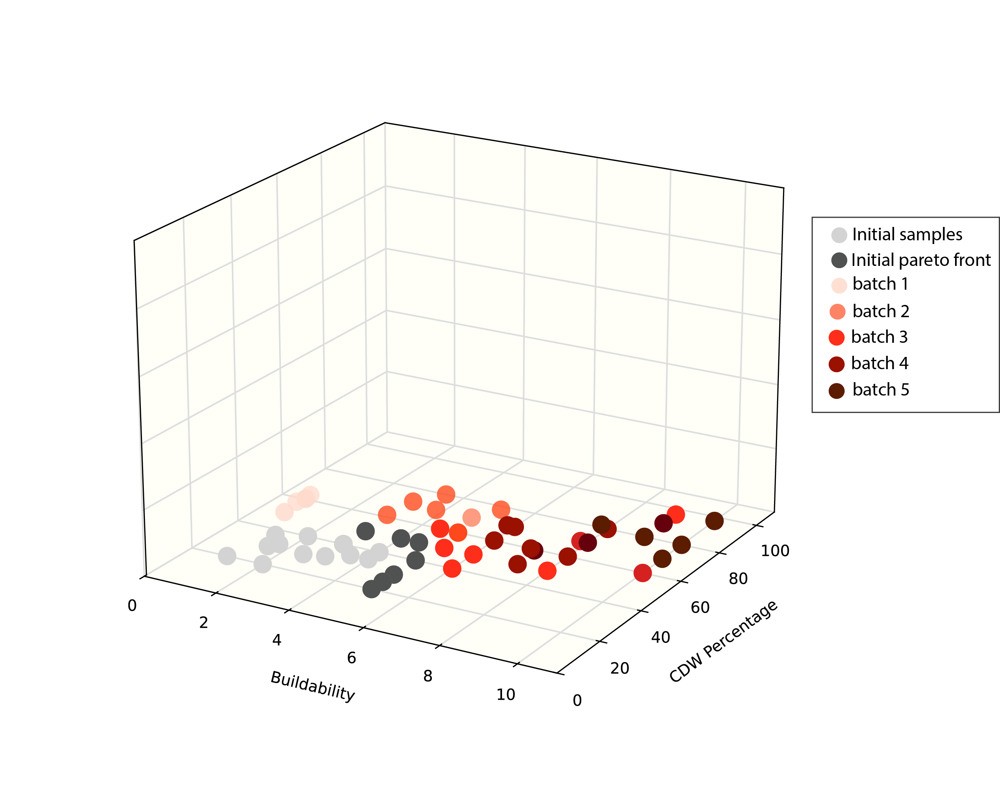
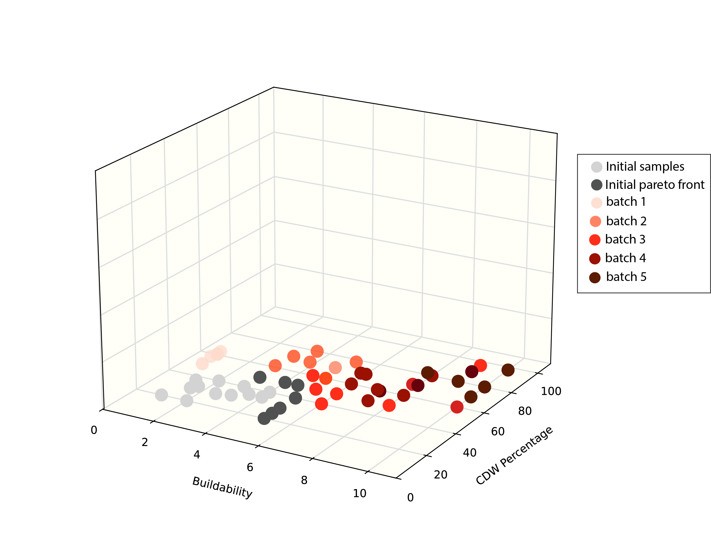
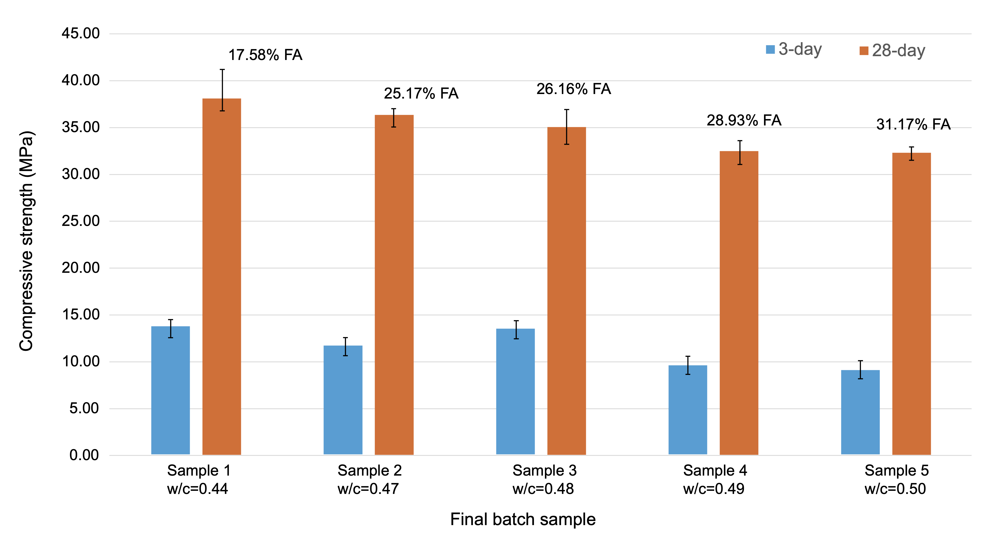
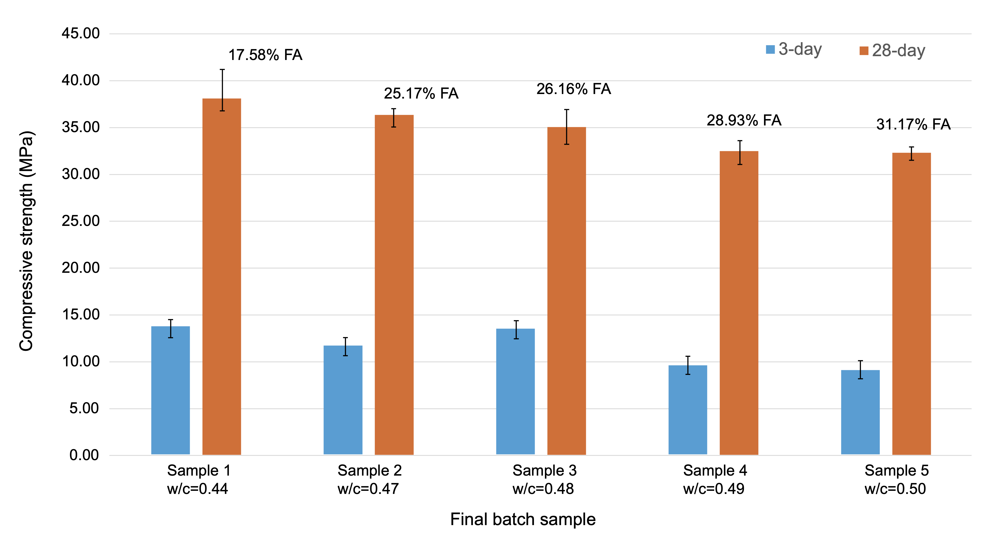
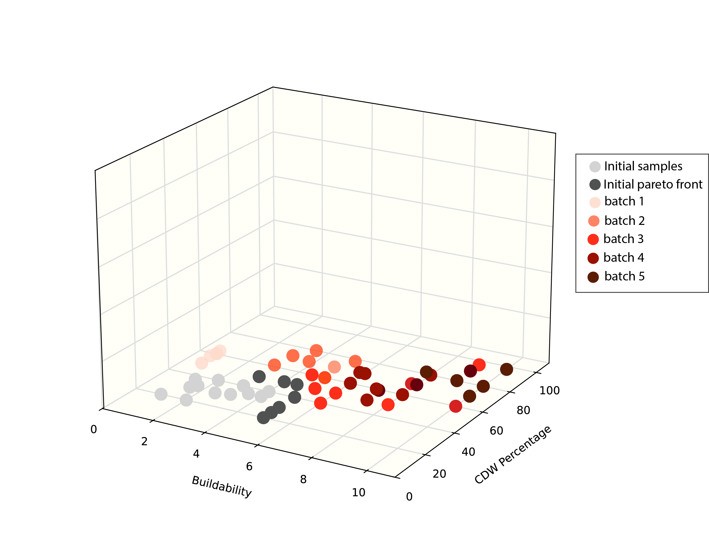
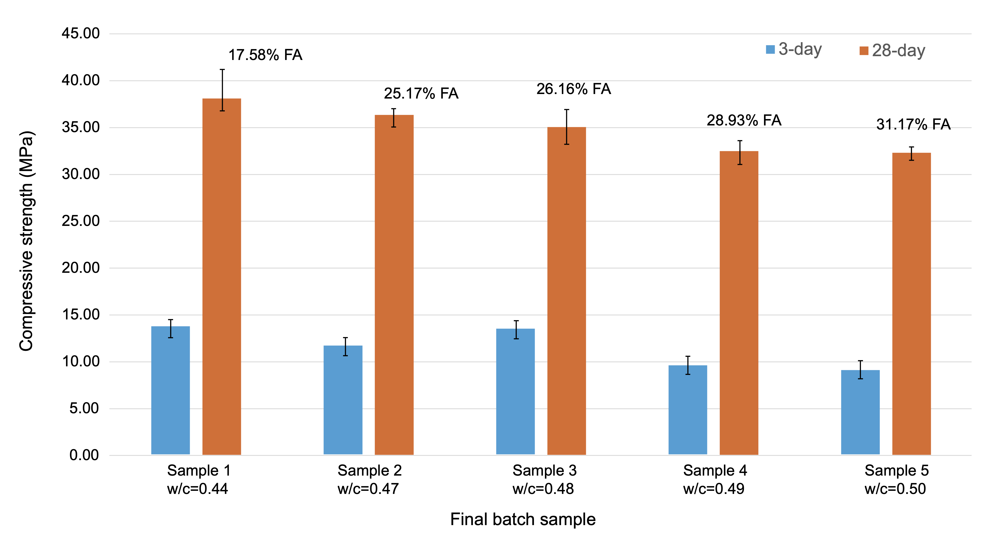
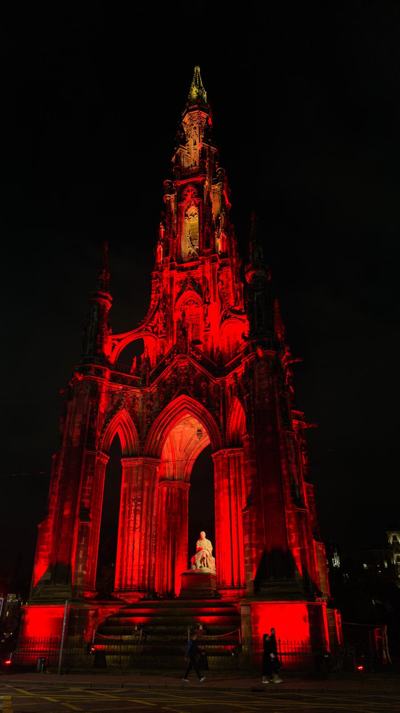
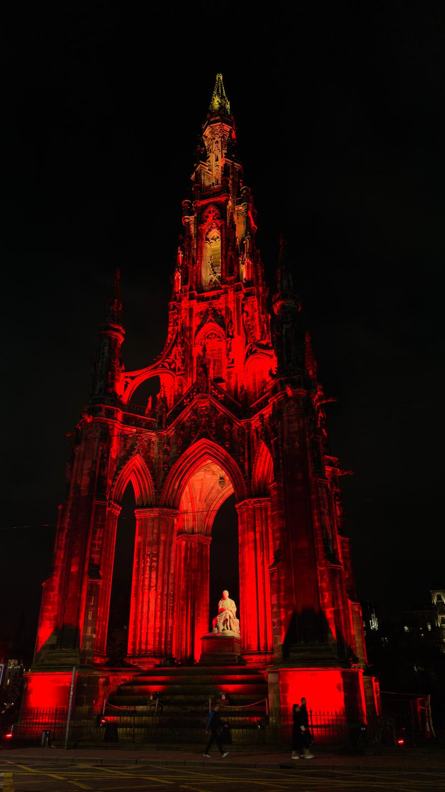

Sustainable Concrete Design
 

 

Accelerating design of sustainable mortar with construction and demolition waste (CDW).
Background & research focus
I am currently a graduate research assistant in the Department of Materials Science & Engineering at the University of Arizona, where I work at the intersection of machine learning, sustainable materials design, and experimental optimization.
My current research focuses on designing sustainable mortar and concrete mixtures incorporating construction and demolition waste (CDW), and on enabling high-throughput discovery of recycled aluminum alloys. I combine laboratory experiments with methods such as Bayesian optimization, adaptive experimental design, and density functional theory (DFT) to rapidly explore complex materials design spaces.
I am passionate about leveraging data-driven approaches to accelerate the development of sustainable materials that can address global challenges in construction and manufacturing.
Selected research directions


Accelerating design of sustainable mortar with construction and demolition waste (CDW).


High-throughput discovery of sustainable aluminum alloys from recycled scrap.


ML and Molecular Dynamics for C60 Modeling, Catalyst Screening, and MOF Discovery.
Talks, Posters & Workshops


 

"International Centre for Mathematical Sciences "
CoMPASs: computational materials science and mathematics at the particle and atomistic scales workshop.


"Adaptive Experimental Design for Sustainable Concrete Mixtures."
Presented our novel framework for accelerating mix optimization using machine learning.


Explored how open knowledge, data transparency, and collaborative tools can advance research in machine learning and sustainable systems.


Participated in the IRIS-HEP workshop, exploring cutting-edge software, data workflows, and machine learning methods used in high-energy physics and other data-driven sustainable technologies.
Peer-reviewed articles & manuscripts
Research & Industry
 Graduate Teaching Assistant
Graduate Teaching Assistant
 Engineering Intern
Engineering Intern
 Co-Founder
Co-Founder
 Materials Lab Intern
Materials Lab Intern
 Summer School (Princeton University)
Summer School (Princeton University)
 Leadership
Leadership
 Graduate Research Assistant
Graduate Research Assistant
Recognition & competitive grants
Awarded $20,000 as part of a team for developing Cocoa Potash sustainable solution.

Selected among graduate engineering students for outstanding academic performance.
Received funding to organize conferences and train participants on using Wikipedia.

Supported participation in the 1st RAIL Innovation Challenge in Ghana.

Fully funded undergraduate studies in Materials Science and Engineering.

Funded travel to present research at CoMPASs: computational materials science and mathematics at the particle and atomistic scales 2025.

Community, mentoring & open knowledge
Organized monthly workshops training members to contribute to open-source platforms.
Mentored students and organized skills training sessions on MATLAB.
Led a student organization focused on community service and educational outreach.
Co-founded a student-led initiative to equip students with research experience.
Let’s collaborate
I am open to opportunities in research, industry collaborations, and interdisciplinary projects.